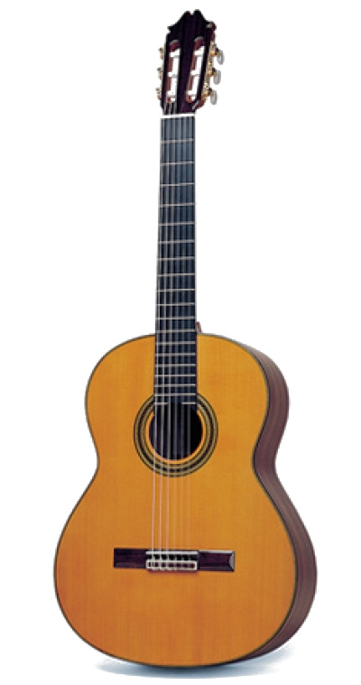
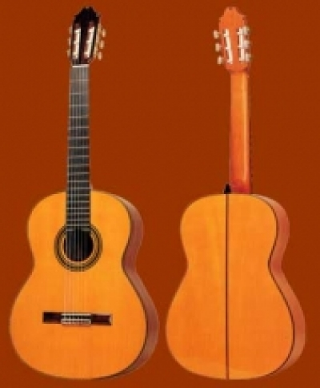

Η συλλογή μας
Κλασικές κιθάρες.
Η κλασική κιθάρα συνδυάζει την τέχνη της κατασκευής με τη μοναδικότητα του ήχου. Ανακαλύψτε επιλεγμένα όργανα των Juan Hernández και Azahar, με διαφορετικό χαρακτήρα και δυνατότητες μουσικής έκφρασης.

Τα όργανά μας
Κάθε κιθάρα, ο δικός της χαρακτήρας.
Καμία κιθάρα με αυτή την επιλογή.
Δείτε ολόκληρη τη συλλογή ή επιλέξτε άλλον κατασκευαστή.
Τέχνη και κατασκευή
Η λεπτομέρεια διαμορφώνει τον ήχο.
Στην κλασική κιθάρα, η επιλογή των υλικών, η κατασκευή και η φροντίδα της λεπτομέρειας συμβάλλουν στον ιδιαίτερο χαρακτήρα κάθε οργάνου. Από την πρώτη επαφή με τις χορδές μέχρι την απόκριση του ήχου, κάθε κιθάρα προσφέρει μια διαφορετική μουσική εμπειρία.

Η έκθεση
Δείτε τις κιθάρες από κοντά.
Η επιλογή μιας κιθάρας είναι μια προσωπική εμπειρία. Στην έκθεση Nikotian, στη Σόλωνος 105, υπάρχει η δυνατότητα να γνωρίσει κανείς τα διαθέσιμα μοντέλα και να ανακαλύψει το όργανο που του ταιριάζει.